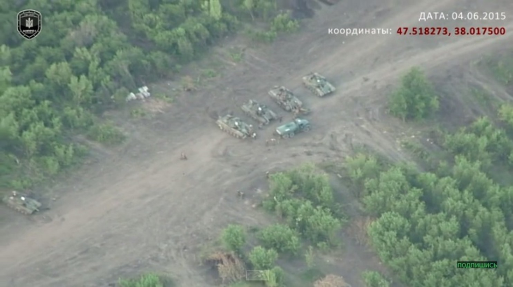
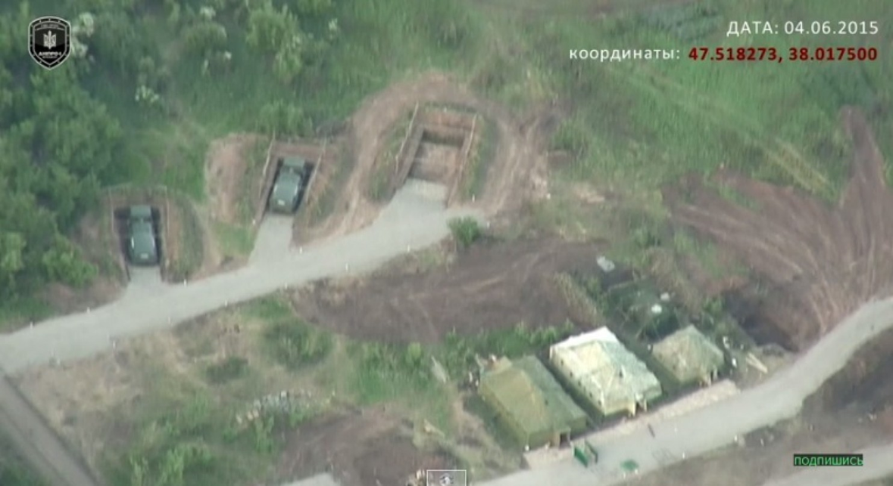

A drone video captured by a Ukrainian Kyiv government-backing volunteer defense force alleges that Moscow has expanded military actions by setting up a secret military encampment in eastern Ukraine. The video, posted on YouTube , details the secret camp within Russian-controlled Ukrainian territory. The video also points out T-72 tanks, construction equipment and tents, and notes that activity has increased in the last month.
The top NATO commander, Air Force Gen. Philip M. Breedlove, said that the border between Ukraine and Russia is “wide open,” and Moscow’s military action in the region is carefully orchestrated to keep pressure on Ukraine from aligning too closely with the West. There is a “constant flow” of troops and equipment across the border, he added.
Large tents also can be seen in the video, raising questions about whether a headquarters has been established for command and control. Fuel trucks appear to have designated parking areas, and roads that include reflective strips for driving at night.
